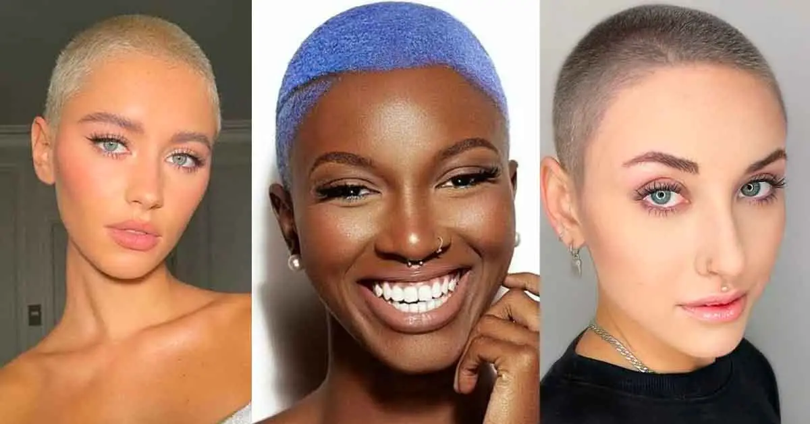

.jpg)
Tudo que você precisar em um único lugar.
p>Bem vindos ao Salon Glamour onde sua satisfação e bem-estar são nossa prioridade.
Onde nossa finalidade é"Proporcionar auto-estima e empoderamento para nossa clientela".
Oferecemos profissionais, experientes e atentos ao mundo da moda. O atendimento possui padrão de exelência, garantindo qualidade e satisfação dos(as) clientes
>Aqui oferecemos diversos trabalhos para garantir a sua beleza
como: cabeleireiros, trancistas, nail desingner, lash lifting, manicures, maquiadores e desingner de sobrancelha alguns dos cortes de cabelo femininos
Popularmente conhecido no Brasil como “corte Joãozinho” o pixiecut está na moda desde os anos 50 e é um corte muito mais delicado que os anteriores, com os lados e a nuca muito curtos mas sem chegar a raspar.

Para as mais ousadas, este é o corte mais curto chamado também de “corte militar”, ele consiste em raspar a cabeça toda igualmente.
Seja qual for o tamanho dos cabelos ou o tipo de fio,o corte de cabelo sidecut consiste em raspar apenas as laterais da cabeça combina com qualquer mulher. Também é muito comum hoje em dia raspar apenas uma das laterais da cabeça.
Cada vez mais difundido entre as mulheres, esse corte consiste em raspar apenas a parte de baixo dos cabelos na linha da orelha. Atualmente muitas mulheres aderem a esse corte diferente pois usar ele solto, além de ser discreto, diminui o volume dos cabelos.
.png)
É caracterizado por ter a nuca raspada gradiente para cima e os lados mais longos na diagonal.
.